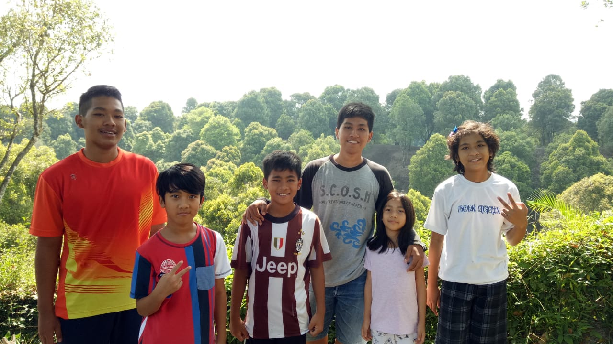
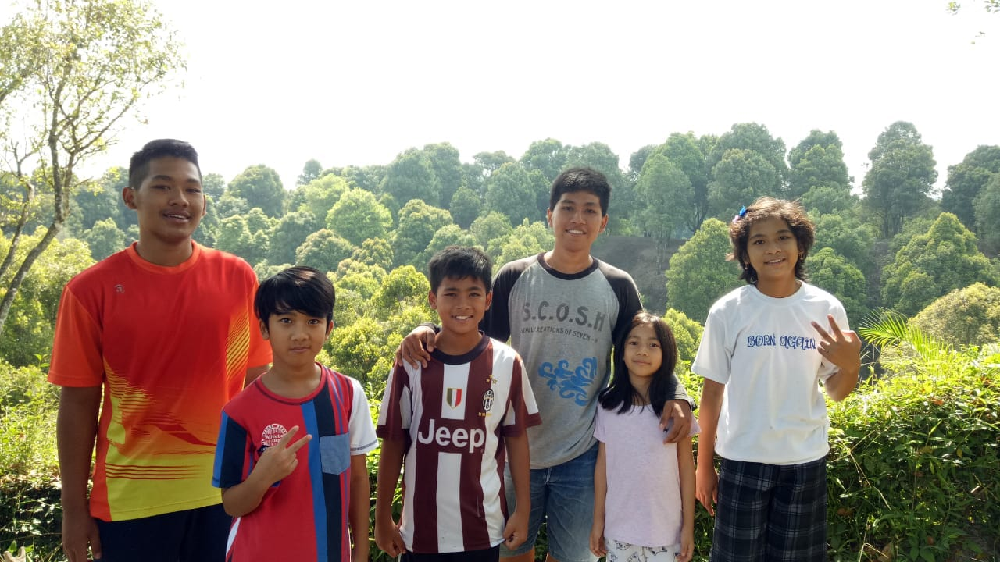

Informasi pribadiku
| Identitas | Riwayat pendidikan | Deskripsi |
|
Nama: Yanuar Krisna Pamuja. TTL: Kediri, 06 Januari 1999. Asal: Kediri, Jawa Timur. Status: Lajang. Profesi: Mahasiswa POLSTAT STIS(semester 4) |
TK: TK Kristen Petra Kediri. SD: SD Kristen Petra Kediri. SMP: SMPN 1 Kota Kediri. SMA: SMAN 2 Kota Kediri. Jenjang lanjutan: POLSTAT STIS angkatan 59. |
Saya memiliki tinggi badan 165 cm dan berat badan saya saat ini itu 60 kg. Saya orangnya agak pemalas, kalau lagi mood baru rajin. Suka berolahraga, misalnya yang saya jalani sekarang ini yaitu main futsal, jogging, dan juga bridge. Saya penyuka wanita, dan juga matematika. Saya suka warna kuning, maka dari itu saya agak cuek orangnya, kurang peduli terhadap sekitar. |
Galeri

 
